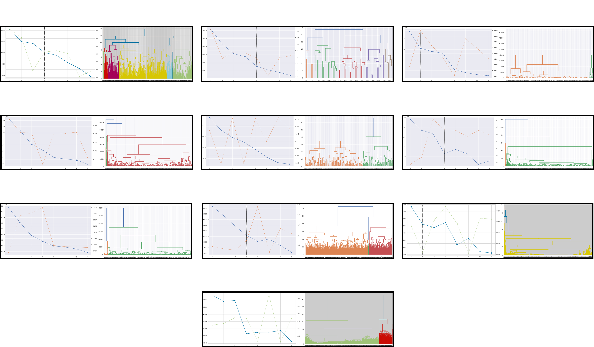
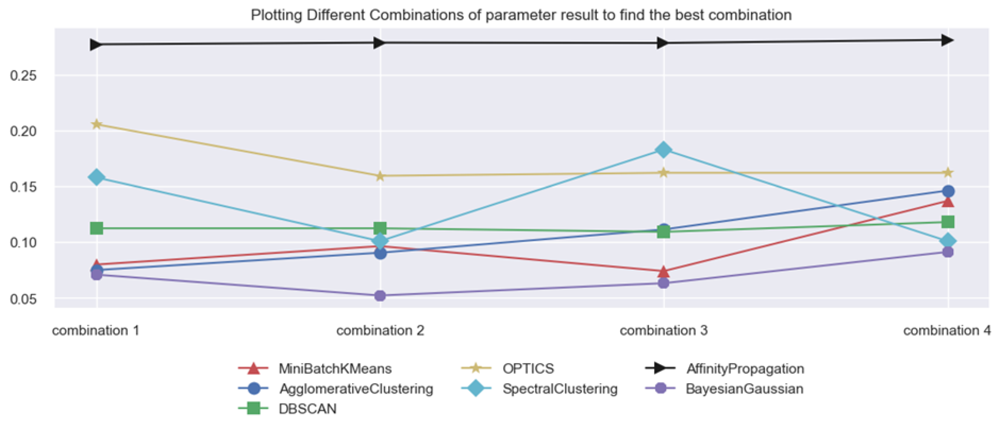
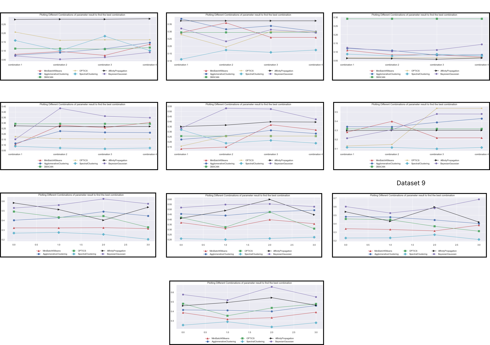
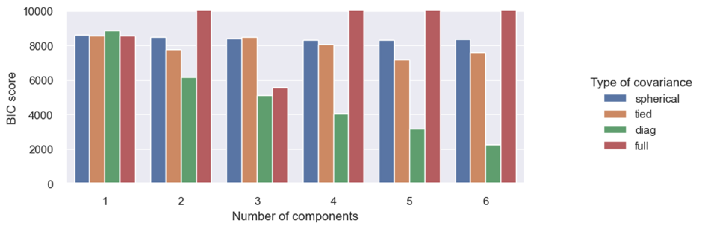

Analysis of Distribution-based Clustering Methods
Created by
Fareed Hassan Khan
- ERP 25367
Published on December 31, 2022
Data mining and machine learning techniques called clustering involve categorising a dataset
into clusters, each cluster consisting of data points that are like one another. Clustering algorithms
come in a wide range of variations. In this blog article, we will examine several clustering techniques
on various types of datasets, as well as some advantages and disadvantages of applying them.
Introduction
There are more than 100 different clustering algorithms exist, as I previously stated, and the one that is best
suited for a given dataset will rely on the properties of the data and the goals of the study. In this blog we
will focusing on the following types of clustering algorithms:
- Partitioning methods - These algorithms divide the data into a predetermined number
of clusters, such as Mini-batch k-means which is basically a variant of the popular k-means clustering algorithm
that is designed to handle large datasets more efficiently.
- Hierarchical methods - These algorithms construct a hierarchy of clusters by
iteratively merging or splitting data points based on their similarity, such as agglomerative hierarchical
clustering.
- Density-based methods - These algorithms identify clusters by identifying regions of
high density in the data, such as DBSCAN and an extension of DBSCAN i.e., OPTICS.
- Model-based methods - These algorithms use a statistical model to describe the data
and identify clusters, such as Gaussian mixture models (GMM), Affinity Propagation and Spectral Clustering.
Within these clustering methodsProbabilistic models are important because they provide a framework for
understanding the uncertainty and variability in the data. Since GMM (Model-based method) is a
probabilistic model that assumes that the data points in a cluster are drawn from a mixture of several different
normal distributions. The purpose of this blog is to compare GMM with other clustering approaches and
analyse on what cases does GMM performs well and in what cases it does not?
Results and Findings
Before doing hyper parameter tuning, for Mini-Batch Kmeans and Agglomerative, we plotted Elbow curve and
Dendrogram to obtain ideal number of clusters for each dataset.
For example: based on elbow curve the number of cluster for dataset 1 is 7 and based on dendrogram is 2 and
so on. A total of 10 figures were generated.

After computing the elbow curve and dendrogram we now must perform hyper parameter tuning for all the models
other than GMM.
Let's look at the hyper parameter tuning for first dataset:

To find the best parameter combination for each of the listed clustering model, we must choose the highest point
for each of the line which gives us the best parameters for each model. (Example: for Mini-batch Kmeans
combination 4 is the best as it gives the highest score value and so on for other models).
Similarly, this graph was also plotted for each dataset, A total 10 figures were generated:

Now after computing the best parameter of each model for each dataset. It’s time to perform Hyper parameter
tuning for GMM. This is done by using GridSearchCV and a user-defined score function which returns the negative
BIC score, as GridSearchCV is designed to maximize a score (maximizing the negative BIC is equivalent to
minimizing the BIC).
Let’s look at the hyper parameter tuning of GMM for first dataset:

By keeping the number of component constant i.e., 1 we can clearly observe by changing the covariance
type, each of the covariance type yield somewhat similar BIC Value without having much variation and so on.
Moreover, we can see that for number of component value 6, type of covariance value equal to
diag yield the minimum BIC value as compared to all other combinations.
Similarly, this graph was also plotted for each dataset, A total 10 figures were generated:

As we have performed Hyper parameter tuning for each model now, we have to make comparison between GMM score and
the rest of the models score for each dataset.

Conclusion
As you can see for half of the datasets GMM score is very less as compared to any other model while for other
half datasets GMM did perform well in comparison. There are several possible explanations for why a Gaussian
mixture model (GMM) could not function effectively in a specific circumstance.
Some reasons are:
- GMMs may not function effectively with limited or poorly representative datasets because they are
probabilistic models that depend on statistical estimations.
- A GMM may overfit the data and perform badly on fresh, untested data if it has too many components (i.e., is
too complicated).
-
The GMM has a variety of hyperparameters that need to be properly selected, including the model's covariance
structure and the number of components. The GMM might not work successfully if these hyperparameters are not
configured correctly.
- GMMs may not function well if the data is highly skewed or contains outliers since they presume that the data
being modelled has a Gaussian distribution.
It's also possible that the GMM is not the most appropriate model for the task at hand, and a different type of model would perform better.
While for other half datasets it can be multiple reason of why GMM gives high score, some reasons are:
- GMM works best when the data are well-suited to this kind of model. The data is well-modelled by a mixture of Gaussians. GMM might be an excellent option, for instance, if the data is unimodal (i.e., contains a single peak) and has a symmetrical distribution.
- The number of components is properly chosen: GMM requires the user to specify the number of mixture components (i.e., the number of Gaussian distributions in the mixture). If the number of components is chosen appropriately, the model can accurately capture the complexity of the data and perform well.